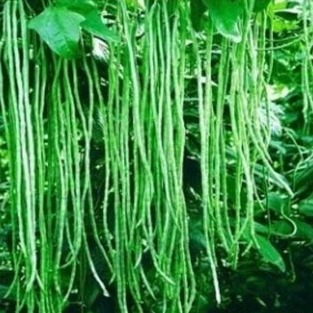

Sayuran

1. Bayam
Bayam (Amaranthus) adalah tumbuhan yang biasa ditanam untuk dikonsumsi daunnya sebagai sayuran hijau. Tumbuhan ini berasal dari Amerika tropik namun sekarang tersebar ke seluruh dunia. Tumbuhan ini dikenal sebagai sayuran sumber zat besi yang penting bagi tubuh. Bayam sebagai sayur hanya umum dikenal di Asia Timur dan Asia Tenggara, sehingga disebut dalam bahasa Inggris sebagai Chinese amaranth. Di Indonesia dan Malaysia, bayam sering disalahartikan menjadi "spinach" dalam bahasa Inggris (mungkin sebagai akibat penerjemahan yang dalam film kartun Popeye), padahal nama itu mengacu ke jenis sayuran daun lain - lihat Bayam (Spinacia). Di tingkat konsumen, dikenal dua macam bayam sayur: bayam petik dan bayam cabut. Bayam petik berdaun lebar dan tumbuh tegak besar (hingga dua meter) dan daun mudanya dimakan terutama sebagai lalapan (misalnya pada pecel, gado-gado), urap, serta digoreng setelah dibalur tepung. Daun bayam cabut berukuran lebih kecil dan ditanam untuk waktu singkat (paling lama 25 hari), lebih cocok untuk dibuat sup encer seperti sayur bayam dan sayur bobor. Bayam petik biasanya berasal dari jenis A. hybridus (bayam kakap) dan bayam cabut terutama diambil dari A. tricolor. Jenis-jenis lainnya yang juga dimanfaatkan adalah A. spinosus (bayam duri) dan A. blitum (bayam kotok). Kandungan besi pada bayam relatif lebih tinggi daripada sayuran daun lain (besi merupakan penyusun sitokrom, protein yang terlibat dalam fotosintesis) sehingga berguna bagi penderita anemia.